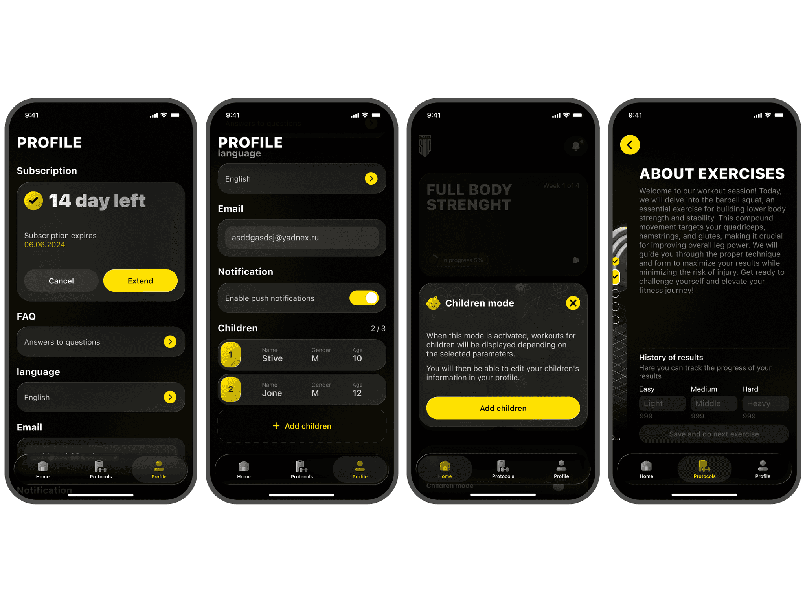
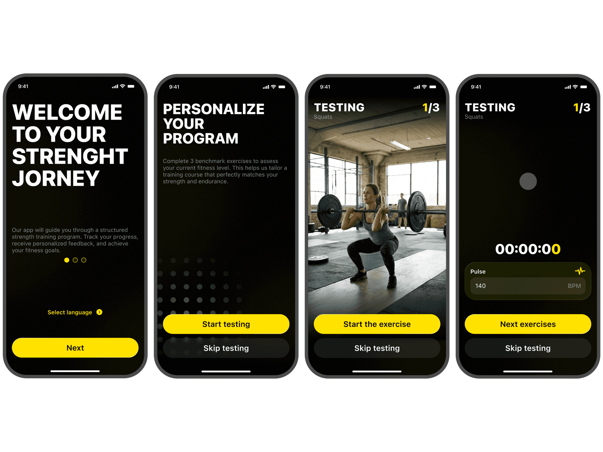
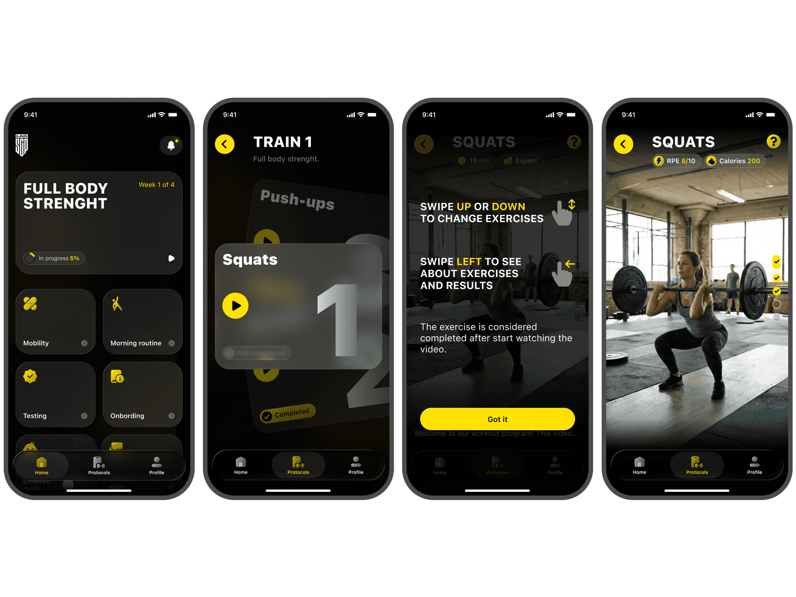
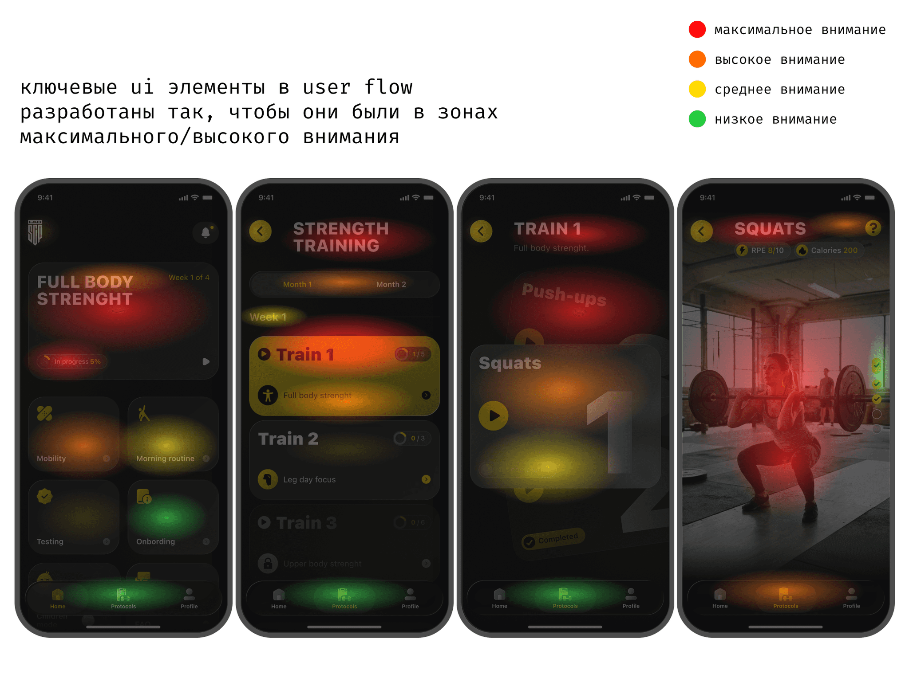
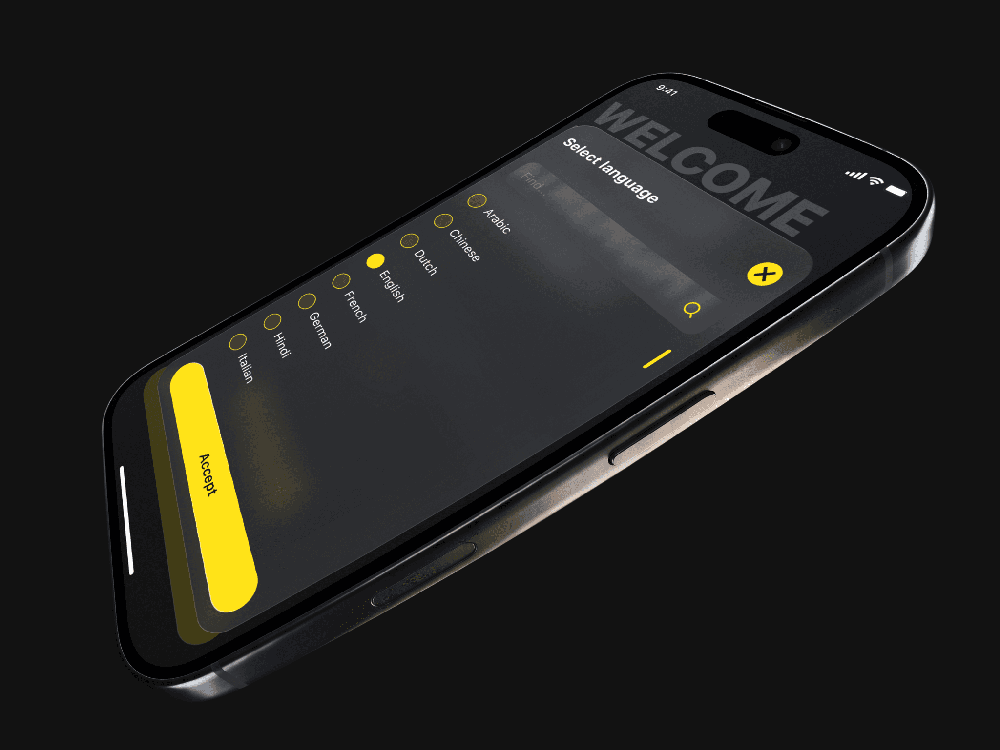
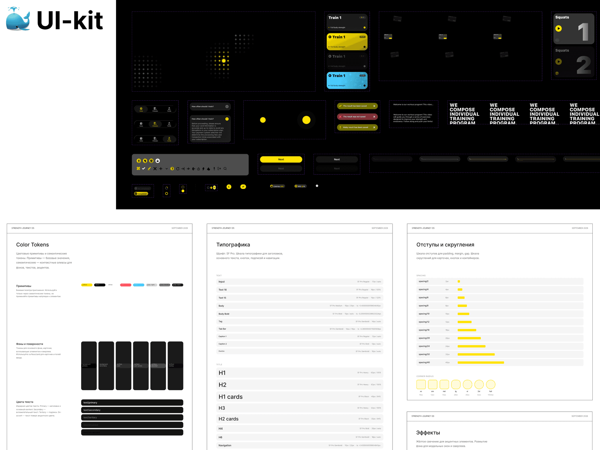
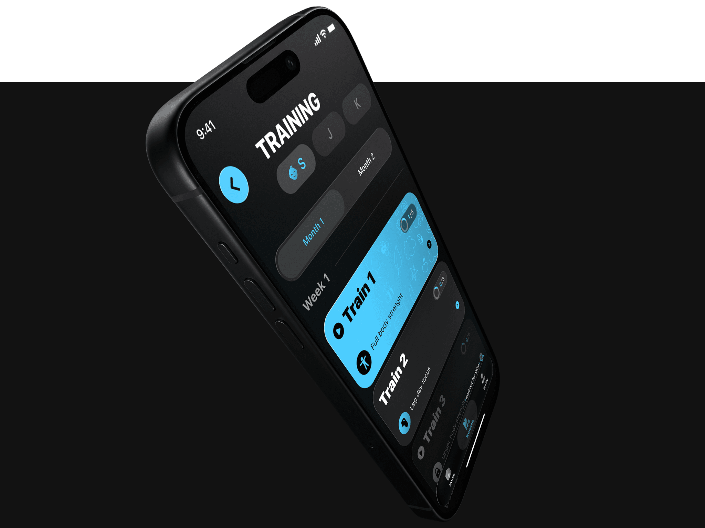
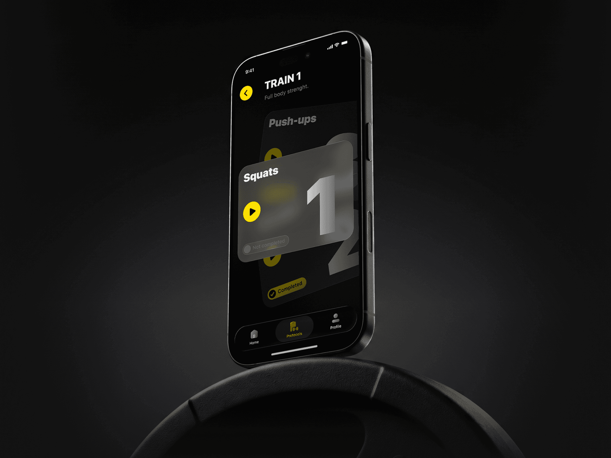

sCPlab
SCP LAB is a mobile app that works as a personal trainer for professional athletes. It assesses an athlete’s physical data and builds a strength training plan for them. The app has video instructions from professional coaches with tuned load, a progress tracker, smart reminders and weekly analytics.
in this case
-
I moved the payment to a later point so that people buy the subscription at full price.
The paywall now sits at the end of the free assessment, when the program is already built. -
I made an interface that is easy to use with tired hands after a set.
Large high-contrast elements and full-screen video, everything works with one hand. -
Why I didn’t go with a discount, even though it is the easiest option.
Three hypotheses, ICE scoring and the risk I discussed with the client. -
I tested the interface in a gym before the videos were shot.
I generated a workout frame, took it to a gym and found a mistake before the shoot.
 Ux/UI
Ux/UIProject at a glance
Role. I was the only designer on the team and was responsible for all product design.
Timeline. 8 months.
Starting point. The product was built from scratch. All I had at the start was an app map.
What I did. Research, user flows, interface, design system and handoff to development.
Outcome. 68 screens, a UI kit of 88 components and dev-ready mockups with all states.
Task and constraints
The task was to design a mobile trainer app for professional athletes from scratch.
Business goals: shorten the time to start a workout and convert more users from the free period to a full-price subscription.
Client request: a premium glass effect in the interface.
Technical constraint from the client: the subscription is sold only through App Store in-app purchases. The payment window is a system one, so it can’t be changed and I can’t add my own arguments to it. Price and trial period are set in App Store Connect, not in the app. This meant the value of the subscription had to be explained before that window.
What I found out
Competitors. I read reviews of similar apps. Users praise the videos and programs and complain about a paywall that shows up before it is clear what they are paying for. My first conclusion: stand out with features and design, not with price.
Funnel. Fitness apps usually ask for payment before people have felt any value. I decided that an athlete should first put their own time and effort into the product and pay after that.
Gym. In the gym people have sweaty hands, their fingers shake after a set, and lamps cause glare on the screen. So elements have to be large and high-contrast, and actions should take one or two taps.
Content. A professional already knows the technique. What brings them back is videos from top coaches. So video has to be at the center of the product.

Three hypotheses and how I chose
To compare the hypotheses I scored them with ICE. Impact: how strongly the hypothesis would move the key metrics, which are full-price payments and athlete retention. Scored from 1 to 10. Confidence: how sure I am of the effect given the research data, from 0 to 100%. Ease: how much time, resources and team effort it takes, from 1 to 10, where 10 is easiest. The total score is Impact × Confidence × Ease.
Hypothesis A. A first-month discount. It gives a quick effect but teaches people to wait for discounts. And the main goal is full-price payments.
Impact 3/10 · Confidence 60% · Ease 9/10 → ICE 16.2
Hypothesis B. A shorter questionnaire, paywall in the same place. There is less friction, but people still pay without understanding what for.
Impact 4/10 · Confidence 50% · Ease 6/10 → ICE 12
Hypothesis C. Value first, payment later. The athlete takes the assessment with video lessons for free and sees the subscription when their program is already ready. I was counting on the IKEA effect: people value what they have put effort into.
Impact 9/10 · Confidence 70% · Ease 3/10 → ICE 18.9
I chose C because it has the highest ICE score: 18.9 versus 16.2 and 12. It is the hardest to build, but it is the only one that answers all four research findings and has the strongest effect on full-price payments. The risk is that the first payment comes later. I told the client about it right away and suggested a post-launch test: compare the paywall at the start and at the end of the assessment by conversion to a full subscription.
Where I was wrong and what I changed
A “play” icon on the steps. In the first version the tiles on the main path looked like ordinary cards. I noticed that people stopped at every step and thought about what to do next. So I added a “play” icon to the tiles to show that a tile starts a video and leads to the next step. After that there were fewer stops on the steps.
Testing the interface before the shoot. The videos hadn’t been shot yet, and I needed to know whether the interface is readable on top of video in a gym. I generated a workout frame with bad lighting, put the interface on top of it and went to an ordinary gym with my phone. I looked at it myself in bright light and asked visitors to read the screen and tap the right button.
That is how I found the problem. The video progress indicator on the right didn’t have enough contrast and got lost against the frame. I redid it, and now it reads in any light. The mistake was fixed before the video shoot and development, when it would have cost more.
Decisions and what they target
Paywall at the end of the assessment (UX funnel). First the person takes an initial physical assessment with a metronome and video lessons. Then they see the message “your personal program is ready”, and only after that the subscription.
How this solves the App Store constraint: the system payment window explains nothing. So I put our own screen in front of it: “your program is ready”, what is in it and how much it costs. People reach the system window already knowing what they are paying for.
What it targets: full-price payments, because people pay for a program that is already built for them.

Video at the center of the workout screen (UI). The screen has a large player, a timer and basic buttons. I removed everything else.
What it targets: a quick start to the workout and return visits. The main reason people use the app is visible in every workout.


Large high-contrast elements (UX). I designed tap areas and indicators for sweaty hands and shaking after a set.
What it targets: people hit the right button on the first try, and the app is easy to use right between sets.

Glass only where it doesn’t get in the way (UI). The background is deep black, the accent is neon yellow. I kept glassmorphism and liquid glass only in cards, modals and alerts.
What it targets: the client’s request is met, the app looks premium and that supports the full price. Video and readability in the gym don’t suffer.

Defending the design and handoff
I walked the client through the logic step by step: research findings, three hypotheses, ICE scoring and why each decision is needed.
The late paywall raised the most questions, because the first payment comes later and that looks like a risk. I explained it like this: our goal is a full-price subscription, and people pay more willingly for what they have already invested in. I added the post-launch test plan to that. We agreed to use glass in a limited way, only where it doesn’t get in the way of video.
I handed the mockups to development in good order: all screens, states and modals are built with Auto Layout and linked to the UI kit and design system, and animations have comments.
How I work. For eight months I was the only designer, so I linked every decision to a business goal and explained it myself. If a decision is debatable, I say so directly and suggest how to test the risk.

Results
The product doesn’t have statistics yet, so I describe what I changed and which metric each change targets.
Product: how the product works and how people use it
Rebuilt the entry into the product: assessment with video lessons, then “your program is ready”, then the subscription. Before, the paywall was at the start or after the questionnaire. Targets conversion to a full-price subscription.
Simplified the workout screen: video, timer and basic buttons, all within one hand’s reach. Targets shorter time to start a workout and between sets.
Made the main path clearer: the “play” icon on the tiles shows where to tap next. Targets more people finishing onboarding.
Made the video progress indicator readable after the gym test: the athlete sees at once how much is left. Targets comfort during the workout and return visits.
Designed retention features: smart reminders and weekly progress analytics. Targets retention: people have a reason to come back and can see their progress.
Communication: how the product explains its value to users
Value is shown before price: videos from top coaches and a personal program are visible before payment is offered. People understand on their own what the subscription is for.
The payment moment is explained: the message “your personal program is ready” makes payment the next clear step.
A visual style for professionals: deep black, a neon yellow accent and glass. The app looks like a premium tool, and that supports the full price.
Information reads quickly: large type and contrast let people get the main point between sets without reading closely.
68 screens · 10 UX tests · 15 sections · 88 components in 22 sets · 47 styles · 59 variables · 5,983 instances · 117,020 nodes · 27 images · 4 font families

How I used AI
Claude: data collection and analysis. Competitor reviews from the App Store and Google Play, fitness app patterns, the user path and the funnel logic. From this I put together clusters of UX problems and arguments for a late paywall. The main benefit is quality: before, I collected data from a small number of sources, while Claude covers many more, so the conclusions rest on a fuller picture. In time it is about 5 minutes instead of a full day of manual searching.
Gemini: frames for testing the interface. I generated workout frames with difficult lighting to test the interface on top of video in a real gym before the shoot. That is how I found the weak progress indicator.
Claude + Figma Agent: preparing for development. Styles, layer naming, responsive versions, building the design system and components in all states, finding missing screens and states, checking the user path logic and contrast, comments for developers. About 1 hour including edits instead of 16 hours of manual work.
AI helps me with data collection and routine work. I make the decisions myself and check them myself.